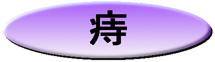

痔でよく使う漢方薬と漢方治療の携帯サイトはこちら
痔でよく使う漢方薬と漢方治療のスマートフォン用サイトはこちら

|
★ 「切れ痔」に「いぼ痔」、「かゆ痔」に「脱肛」、いろいろありますが、どんな痔でも嫌なものです。昔から「痔は不治の病」と言われますが、確かに一時しのぎで治すと、どんどん悪化していきます。どんな病気にでも言えることですが、早めの治療で「痔」とおさらば出来るのです。 ★ 漢方で「痔」は、主に身体の熱が下注して「痔」になると考えます。この熱源を突きとめ、熱源を消す事により「痔」を根本から治します。この熱源で多いのは「胃熱」と「肝熱」です。 前者は、食生活の不摂生などをしている人に多く、後者はストレスの溜まっている方に多く見られます。 熱源により使用する漢方薬が異なります。 |
| 昔から痔になっている方の場合、便の表面に血が付いていると「痔の出血かぁー」と自己判断しがちです。 しかし、直腸やＳ字結腸に出来た腫瘍や潰瘍などから出血の場合もあります。便についてる血液を見れば自己判断しないで必ず検査は受けましょう。 |
| 「痔」の治療に使われる代表的な漢方薬です。 これらだけでなく、体質に合わせもっと多くの漢方薬が使われます。 |
| 漢方薬 | 価格（税抜き） |
| 乙字湯 | ７，５００円 |
| 補中益気湯 | １０，３００円 |
| 桂枝茯苓丸 | ６，９００円 |
| 冠脈通塞丸 | ９，５００円 |
| 防風通聖散 | ５，９００円 |
| 五虎湯 | ７，１００円 |
一ヶ月分の価格（税抜き価格）
| 実際の治療には、体質によりこれらの漢方薬や、他の漢方薬を合わせて使用します。 |
当店で取扱をいたしております漢方薬は全て医薬品です
| 漢方薬は自己判断で服用しないようにしましょう。 服用の際には、必ず信頼のおける漢方の専門家へ御相談ください。 安全な漢方薬でも、使い方次第では危険な薬になってしまいます。 |